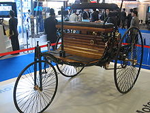
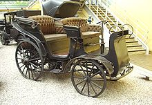
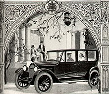

Historie
Nejvýznamnější část historie automobilů se začala psát koncem 18. století, kdy byly realizovány první úspěšné pokusy s vozidly poháněnými parním strojem. K jejich prvním konstruktérům patřili Skot James Watt a nebo Francouz Nicolas Joseph Cugnot. Jeho parní stroj uvezl v roce 1769 čtyři pasažéry a dokázal vyvinout rychlost až 9 km za hodinu. Počátek 19. století byl stále doménou parních strojů, které se postupně zlepšovaly a zrychlovaly. Nic to ovšem neměnilo na jejich provozní náročnosti a těžkopádnosti. Zvrat nastal ve druhé polovině 19. století, kdy se konstruktérům podařilo zprovoznit první spalovací motory. V letech 1862 až 1866 vyvinul Nicolaus Otto první čtyřdobý spalovací motor. Vlastní vývoj dnešních automobilů začal v roce 1885 v německém Mannheimu u Karla Benze, který si nechal patentovat svoji motorovou tříkolku. První dálkovou jízdu s automobilem podnikla Bertha Benzová 5. srpna 1888, a to cestu z Mannheimu do Pforzheimu. V roce 1887 zcela nezávisle na Karlu Benzovi začal automobily stavět také Gottlieb Daimler, který při výrobě motorů spolupracoval s Wilhelmem Maybachem. V roce 1897 pak Němec Rudolf Diesel sestrojil první provozuschopný vznětový motor.
Prvním automobilem vyrobeným na území dnešní České republiky byl v letech 1888–1889 druhý Marcusův automobil vyrobený v adamovském podniku. Prvním funkčním automobilem vyrobeným na území dnešní České republiky byl v roce 1897 Präsident (na počest prezidenta rakouského autoklubu) postavený v Kopřivnické vozovce, tehdy Nesselsdorfer Wagenbaufabriksgesellschaft – ve zkratce NW, (dnešní automobilka Tatra). V roce 1898 následoval první nákladní automobil. Automobily Benz začaly být roku 1898 vybavovány otočným řídicím čepem. Počátkem 20. století se stejně tak objevily první elektromobily. Soutěž mezi automobily s parním, elektrickým a spalovacím motorem trvala téměř až do konce prvního desetiletí 20. století. Poté začaly dominovat automobily se spalovacím motorem i když z hlediska efektivity přenosu energie je i po století vývoje dvakrát výhodnější elektromobil. Elektromobil je zároveň mnohem šetrnější k životnímu prostředí. Jsou s ním spojovány následující výhody: snížení emisí znečišťujících látek vypouštěných do ovzduší, snížení hlukové zátěže vznikající při provozu vozidla, snížení emisí skleníkových plynů s cílem snížit dopady dopravy na změny klimatu a snížení spotřeby fosilních paliv. Na druhou stranu jsou jako hlavní bariéry rozšíření používání elektromobilů uváděny zejména technické parametry, např. vlastnosti baterie (vysoká cena, doba nabíjení, kapacita), nejistá životnost a bezpečnost. Další významnou bariérou je dobíjecí infrastruktura a její dostupnost a flexibilita, ale také standardizace dobíjecích systémů a stanic (v současnosti se používají dva hlavní systémy: CHAdeMO a CCS). V České republice lze dostupnost nabíjecích stanic zjistit pomocí aplikace Nabijto.cz, která poskytuje mapu dostupných nabíjecích stanic pro elektromobily v ČR. Ve dvacátém století se benzínem či naftou poháněné automobily staly nejvýznamnějším dopravním prostředkem. Revoluci ve výrobě a masové rozšíření automobilů odstartoval v USA Henry Ford tím, že vymyslel a vyrobil lidově dostupný automobil. Slavný Ford model T byl uveden na trh v roce 1908 a byl vyráběn až do roku 1927.